The Cisco Meraki Dashboard is the center for thousands of enterprise networks worldwide.
Customers like Applebee's, Starbucks, and IHG Hotels — parent company of Holiday Inn and dozens of other brands — rely on it daily to manage their network infrastructure. At that scale, consistency isn't just a design preference. It's a business requirement.
And yet, for years, the Dashboard had none.
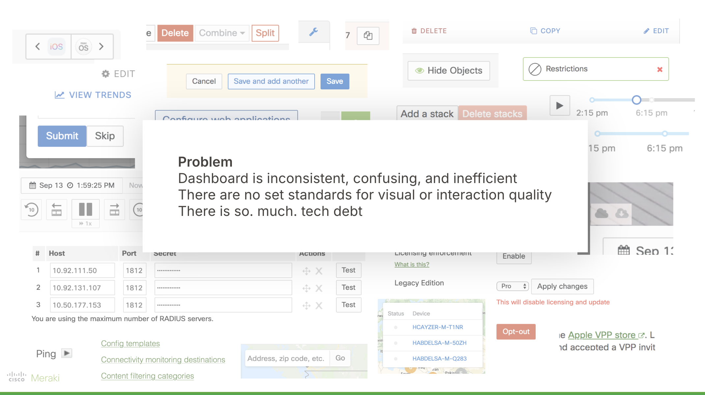
There was no central design system. No shared component library. Designers worked from personal files and tribal knowledge. Engineers made judgment calls on spacing, color, and typography independently, often diverging from one another. The codebase had accumulated more than 70 unique shades of gray and over 30 distinct blues, mostly hardcoded, and sometimes in-line. Every team was effectively building in isolation, and it showed.
More than 70 unique grays. More than 30 unique blues. Hardcoded.
The product's visual language hadn't meaningfully evolved since the early 2000s. For existing customers, that stasis had become a comfort. They'd built workflows around an unchanging interface and resisted updates that disrupted their habits. But for new customers evaluating enterprise tools, the dated look was starting to cost deals. And internally, the lack of shared standards made onboarding slow, collaboration harder than it needed to be, and new feature development unnecessarily constrained by the limitations of an ad-hoc component inventory.
The problem was clear. What it needed was a champion.
Before a single component could be designed, the project had to be sold.
As a senior designer who had once been the interim UX Design Team Lead, my first task wasn't design work — it was organizational work. I needed to build a case compelling enough to secure leadership buy-in and critical resource commitments from teams across the organization who would eventually need to refactor their portion of the Dashboard using the new system. These were teams with their own roadmaps, their own pressures, and their own reasons to be skeptical of a multi-year dependency.
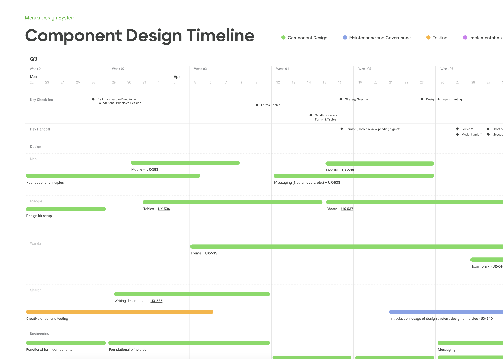
That meant clearly defining the problem, identifying what success would look like, and projecting realistic timelines. Once leads across the organization were aligned on the vision and prepared to commit resources, we could begin work in earnest.
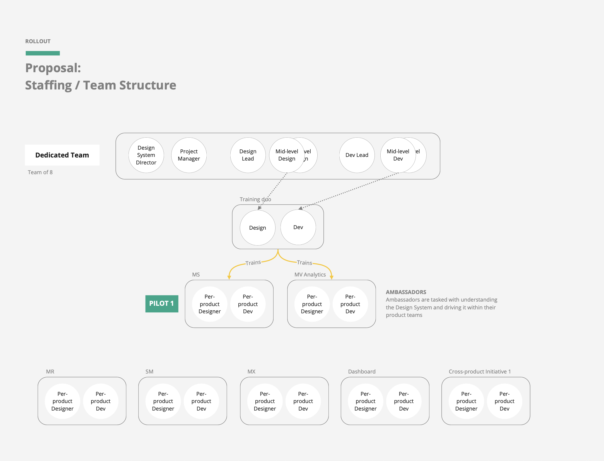
Part of that resourcing was hiring: remote front-end engineers, a UX writer, and a design agency (DesignMap) to partner with us and provide additional design capacity when our internal designers needed to focus on product-specific work. For the design system work, I managed the DesignMap relationship directly, working with a team of three agency designers and part-time internal designers for much of the project.
With the team in place, we turned to the question of what the new Dashboard should actually feel like.
The product design team aligned early with the marketing design team, who were simultaneously rolling out a brand refresh across Meraki. We established three core design principles that would guide every decision: Simplified, Trusted, and Empowered.
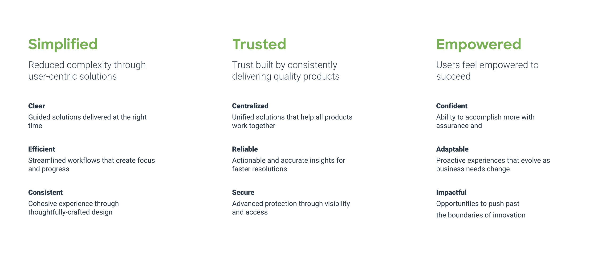
The team generated multiple iterations of key Dashboard screens and tested them with end customers to gauge which directions communicated the brand most effectively.
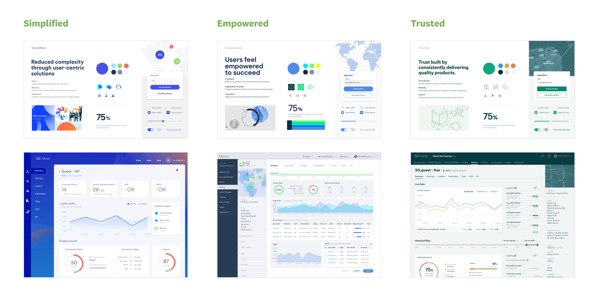
We ran regular surveys with internal stakeholders with every round of design to keep feedback flowing from all directions. That research converged into a style tile and a set of aspirational core designs — a north star the team could build toward.
The design and engineering teams got to work on the ground truth: an audit of pages and components in Dashboard. Each page was assessed for complexity and assigned a timeline for migration to the new system.
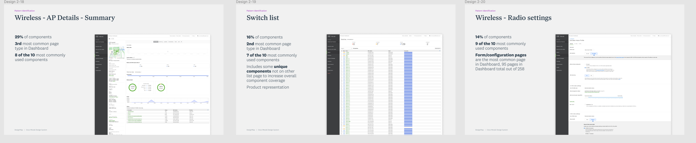
From that inventory, engineering, product design, and product management collaborated to build a prioritized roadmap — identifying low-effort, high-impact pages for early wins that would build momentum, while also flagging high-effort, high-impact pages that needed to start early given their complexity.
The engineering work was critical because it meant that the Dashboard didn't just look more modern — it would actually load quicker and feel smoother.
The component index followed the same logic. Design and engineering worked together to catalog existing components and map them to common page templates: overview pages, list pages, form pages, and so on. That index became the backbone of the component library roadmap.
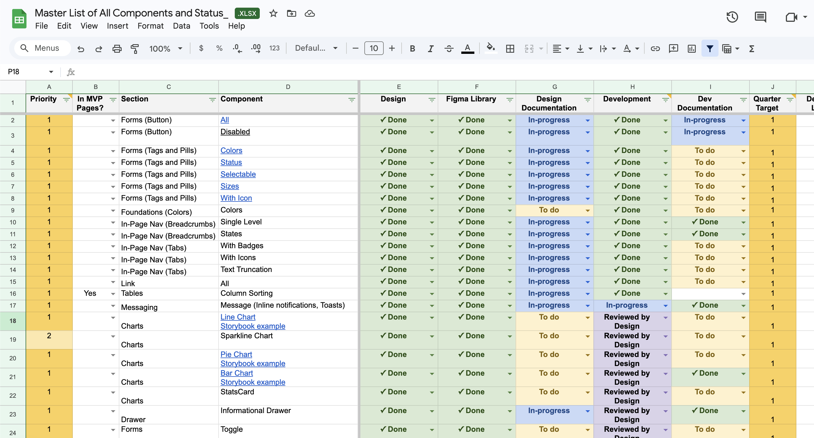
We built from the ground up — atoms before molecules, foundations before features. Color tokens, spacing values, typography scales. We knew some of these foundational decisions would need revisiting as we encountered edge cases and accessibility requirements, and they did. The color system in particular evolved as we pushed for accessibility compliance across different chart types. (In hindsight, it ended up more muted than I'd have liked while trying to accommodate various types of color-blindedness — there's room to make it bolder in the future.)
The approach was deliberately conservative. We weren't reimagining components or changing their behavior. We were translating them — taking what existed and making it consistent, standards-compliant, and extensible. When we encountered one-off edge cases, we made a deliberate call: either build a bespoke solution, or require that feature to use existing components. That discipline kept the library manageable.
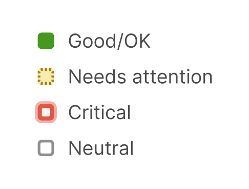
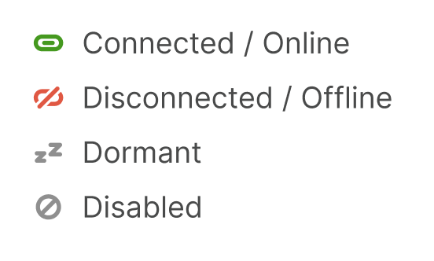
It was a massive exercise in organization and categorization. There was no part of Dashboard left untouched, no stone unturned.
One of the practices that worked really well was something we called Sandbox sessions — open working sessions where members of the broader Meraki design team could come in and try rebuilding their own screens using the new Figma component library.
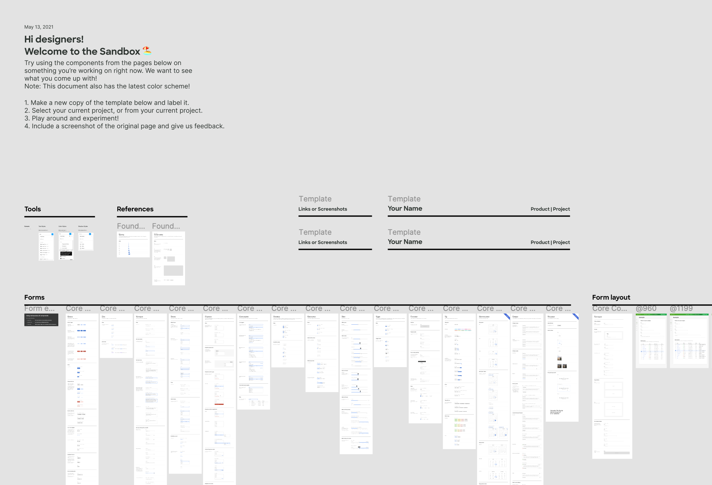
It served two purposes simultaneously: designers learned the component and variant system in low-stakes, hands-on batches, and their feedback directly shaped how we structured and documented the library. It turned adoption into a collaboration rather than a mandate, and we got valuable feedback on how components were working for our users — the designers themselves.
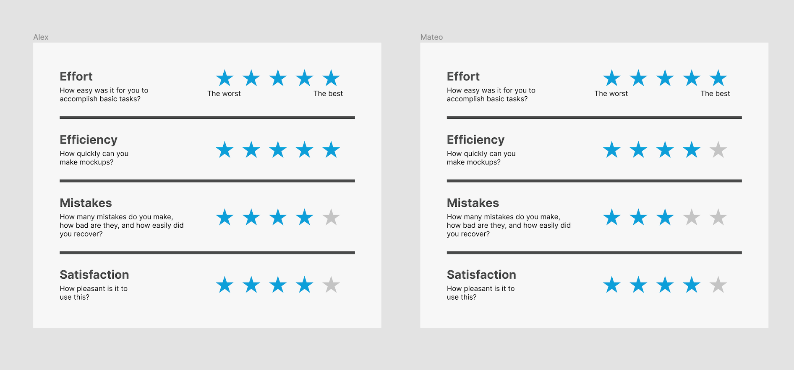
A design system without governance is just a snapshot. It becomes outdated the moment it ships.
To give the system longevity, we built a tiered governance model that balanced standardization with the reality that product teams would always need to innovate.
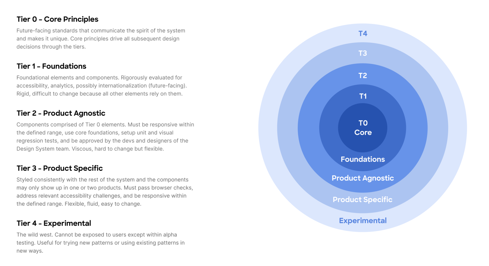
Designers could propose new components, make a case for how broadly applicable they'd be, and with the design system team's review and sometimes active collaboration, get them added to the library. It was designed to reduce unchecked one-offs while keeping the system responsive to real product needs.
We built something meant to grow.
Once we had foundations, globals, and the core components ready, we launched the new system internally.
We called it Magnetic.
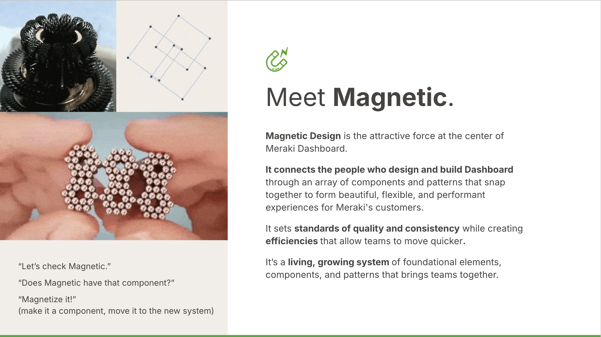
When a page had been refactored and rewritten using the new library, it was magnetized. It sounds like a small thing, but shared language made the work feel like a movement rather than a chore. We even had a little horseshoe magnet as the project mascot.
To help the broader organization navigate the transition, we created a decision tree and supporting documentation for development teams — a practical guide to where the new library applied, when to use it, and how to raise edge cases.
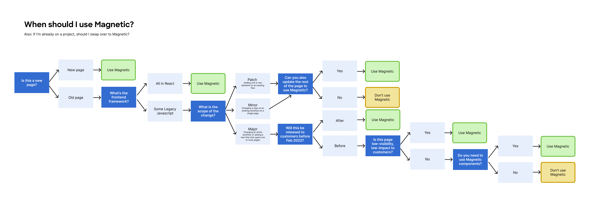
The pilot rollout was carefully staged. We started subtly with a font update that got an opinionated post on the subreddit r/meraki. Then we updated the main navigation, a huge visual shift, followed by a curated mix of high-impact top-level pages. Select users could opt into the beta voluntarily, and many did. Their feedback fed directly back to our team in near real-time.
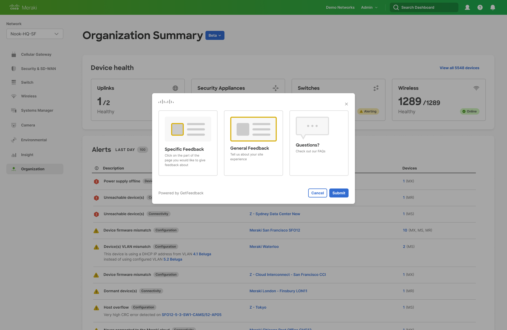
Every change was coordinated with support teams, monitored closely by our PMs, and communicated proactively. We learned quickly that the sequencing and communication mattered as much as the design itself. Disgruntled opinions surfaced and we separated opinion-based feedback ("I don't care for the new colors") from more critical issues ("I can't find X content when I'm in beta mode.").
It was a useful reminder that for customers who live in the Dashboard every day, change itself carries a cost — regardless of whether the end result is better. That tension shaped how we approached the rollout.
Take a look at some before and after screens.
The reaction across the organization was mixed in a good way. Engineers and designers were genuinely excited about working with a clean, consistent library. There was also some grumbling about the scope of refactoring required to migrate existing pages. Technical debt doesn't disappear when a design system ships; it just becomes more visible.
But the structural benefits were immediate and lasting.
Onboarding new designers and engineers became meaningfully faster. The shared language of the system reduced friction in design-to-engineering handoff. Teams that once debated which shade of blue to use could spend that time building.
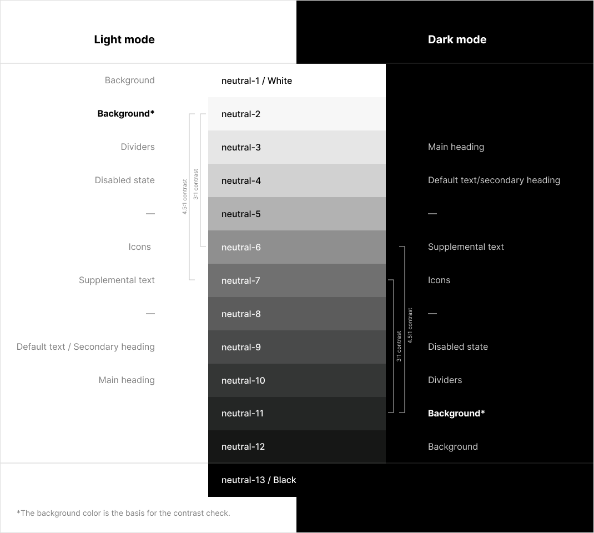
We went from more than 70 unique grays and 30+ unique blues to a single, defined palette.
Word traveled. Other teams inside Cisco started asking if they could use Magnetic — not just the component library, but the design language itself. What had started as a Meraki initiative became the seed of a much larger cross-functional effort, eventually touching multiple Cisco product lines and recent acquisitions.
I was asked to lead workshops to help reimagine Cisco's other entities using Magnetic's design language, and we started calling it the Platform Suite.
Today, at least five distinct business units at Cisco use Magnetic's core design system and component library.
But that's a whole other case study.